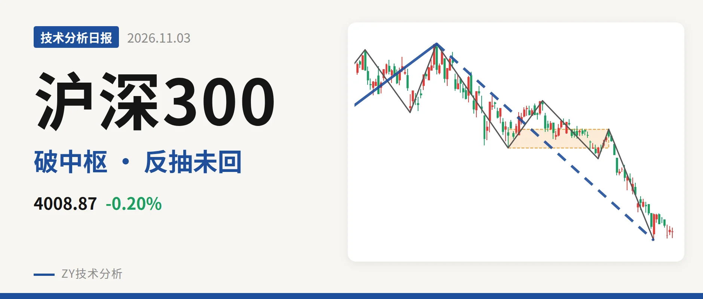
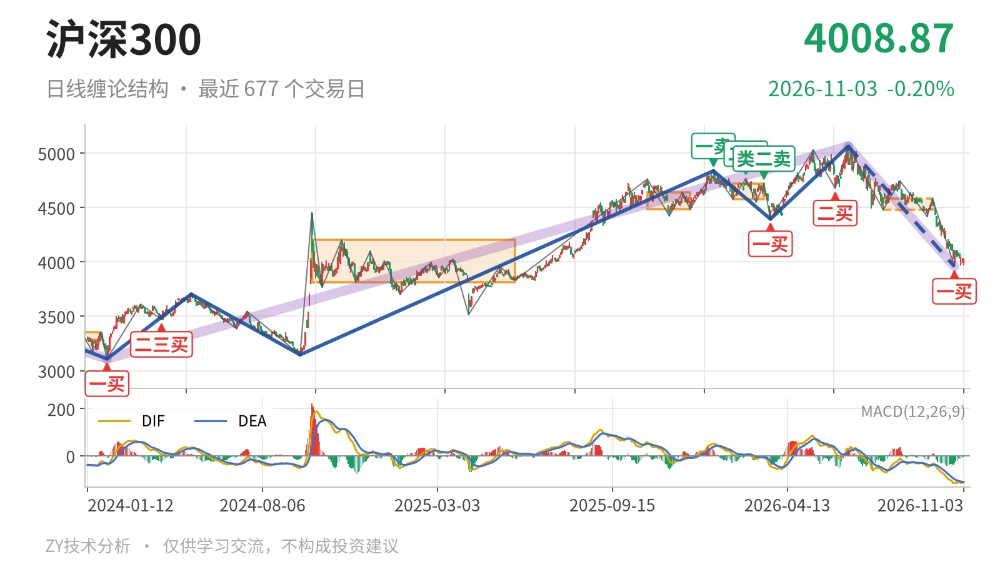

沪深300｜失守4478中枢下沿，3958一买未坏

最近日线中枢 4478.21—4583.38点，收盘位于中枢之下
一句话：下跌段仍在延续，反抽未触及4478点，3958点一买未坏
🧭 走势结构：上涨段未被终结，6月23日下跌段还在延续
更大级别上，2024年2月2日至2026年6月23日的上涨段未被反向线段终结。6月23日以来的下跌段已跌至3958.14点，跌幅约21.8%，目前仍在延续。日线线段上，3月24日至6月23日上涨线段已结束，6月23日至10月23日下跌线段没有结束，内含5笔。9月22日至10月23日下跌笔结束后，10月26日以来只有7根K线反抽，尚未形成上涨笔。因此，当前不是下跌结束，而是下跌结构中的弱反抽。

📉 中枢位置：跌破最近中枢下沿，中枢下移未停
最新收盘4008.87点，位于最近日线笔中枢7月30日至9月22日4478.21—4583.38点下方，低于下沿约10.5%，距离469点。中枢中轴从2月3日至3月17日的4649.53点下移到7月30日至9月22日的4530.80点，最新价又跌破该中枢下沿，中枢下移没有结束。下方更大的日线笔中枢2024年10月8日至2025年5月30日区间为3812.32—4200.91点，最新价落在中轴4006.61点附近，尚未脱离这个更大震荡区间。
🔍 买卖点：旧买卖点多数已降级，10月23日一买未坏
日线笔级别上，1月13日一卖4836.95点、2月25日二卖4766.56点、3月17日类二卖4720.86点，一个比一个低。但6月23日创出5064.27点新高，这三个卖点只对应较小级别。同样，3月24日一买4394.29点、6月8日二买4677.57点，也被10月23日3958.14点波段新低破坏，只剩小级别意义。当前只有10月23日一买3958.14点尚未被破坏，10月26日以来最低3968.86点未创新低；但反抽最高4110.00点，没有触及4478点，仍受最近中枢下沿压制。

⚡ 背驰观察：绿柱面积收敛，DIF未现新低不新弱
9月22日至10月23日下跌笔没有出现标准底背驰。它与6月23日至7月30日下跌笔相比，绿柱面积494小于650，面积未放大；但DIF低点从-66.5下移到-115.1，指标同步新低。因此这不是“新低不新弱”，更像面积收敛、指标未确认。10月23日一买更可能是小级别背驰触发，日线标准底背驰没出现。最新DIF-112.4、柱-4.1仍处零轴下方，也说明反抽尚未改变空头格局。
🎯 关键位置：4478点与3958点的结构含义
上方4478点是最近中枢下沿，反抽没有回到该点上方前，结构仍有三卖压力。10月26日以来反抽最高4110.00点，距离4478点还有368点，尚未解除这一压力。若能重新站上4201点，即2024年10月8日至2025年5月30日大中枢上沿4200.91点，则下跌更可能只是大中枢扩展。下方3958点附近是10月23日一买低点，回落若不破3958点，日线仍有构筑新笔中枢或继续反抽的条件；一旦跌破3958点，10月23日一买降级，下跌段继续。综合看，当前仍受三卖压力，最新价位于最近中枢下沿之下且反抽未触及4478点，属偏弱结构。
⚠️ 本文为基于公开行情数据的缠论技术结构记录，由程序自动计算并生成，仅供学习交流，不构成任何投资建议。市场有风险，投资需谨慎。